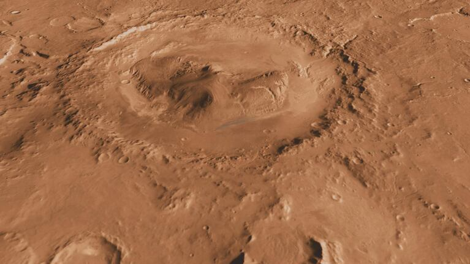

Una vasta depresión de suelo rojizo, formada hace millones de años por el impacto de un meteorito. El óxido de hierro tiñe cada roca con tonos carmesí, y en sus profundidades aún quedan restos de antiguas expediciones perdidas.